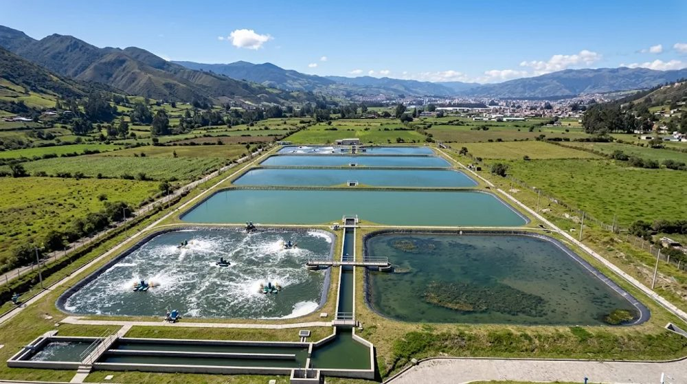
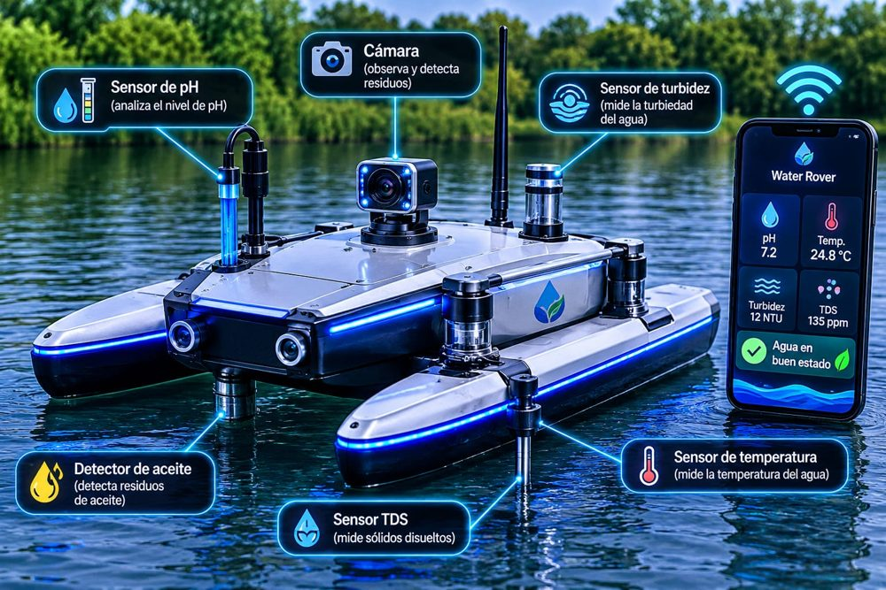
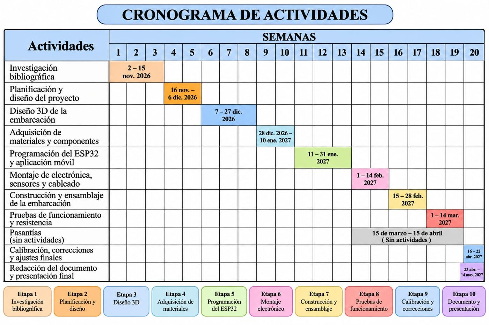

Equipo
Andrés Parra, Andrea Basantes, Christopher Idrovo y Nube Cali
Ing. Galo Patricio Hurtado
ETAPA EP
Viernes, 13 de noviembre de 2026
El problema
En plantas como la de ETAPA EP, el agua pasa por un tratamiento preliminar y un tren de 6 lagunas de estabilización: 2 aireadas, 2 facultativas y 2 de maduración. Monitorearlas hoy tiene dificultades. Toca cada una para verlas:

Pregunta de investigación
¿Cómo diseñar e implementar una embarcación teleoperada mediante LoRa y ESP32, capaz de desplazarse por las lagunas para medir, registrar y visualizar pH, turbidez, temperatura y TDS del agua en ETAPA EP?

Objetivos
General: implementar un prototipo de embarcación teleoperada con ESP32 y LoRa para navegar por el tratamiento preliminar y las 6 lagunas, y registrar variables de calidad del agua.
Alcance y limitaciones
✅ Alcance
- Prototipo: modelo físico funcional.
- Control: navegación remota por LoRa.
- Medición: pH, temperatura, turbidez, TDS, ultrasónico y aceite (opcional).
- Procesamiento: ESP32 e interfaz digital.
⚠️ Limitaciones
- No certifica potabilidad: no evalúa seguridad microbiológica.
- Las pruebas dependen de la autorización de ETAPA EP.
- Clima adverso, maleza o corrientes pueden afectar la navegación.
Arquitectura del sistema
Elige un tema para ver el detalle.
- Control y comunicación: ESP32 y módulos LoRa.
- Propulsión: motores eléctricos con hélices, driver y batería.
- Sensores: pH, DS18B20, TDS, turbidez, ultrasónico impermeable y aceite (opcional).
- Estructura: casco flotante estable.
- Programación: Arduino IDE.
- Interfaz: aplicación móvil o panel digital.
- Lineamientos operativos de ETAPA EP y buenas prácticas en mecatrónica.
Cronograma
20 semanas, de noviembre de 2026 a mayo de 2027. Toca una etapa.
Selecciona una etapa para ver sus fechas.
Desliza la imagen para verla completa →

Presupuesto
Marca o desmarca ítems para ver cómo cambia el total.
| Elemento | Cant. | Unitario | Total | |
|---|---|---|---|---|
| Subtotal materiales | ||||
Presupuesto previsto: $350–400.
Pon a prueba lo aprendido
Referencias
- American Public Health Association. (2017). Standard methods for the examination of water and wastewater (23.ª ed.). APHA; AWWA; WEF.
- Chapman, D. V., & Sullivan, T. (2022). The role of water quality monitoring in the sustainable use of ambient waters. One Earth, 5(2), 132–137. doi
- ETAPA EP. (2024). Manual de procesos de depuración y tratamiento de aguas residuales en la planta de Ucubamba.
- Monk, S. (2022). Programming ESP32 with Arduino (2.ª ed.). McGraw-Hill Education.
- UNESCO. (2024). Informe Mundial de las Naciones Unidas sobre el Desarrollo de los Recursos Hídricos 2024. unesdoc
- Organización Mundial de la Salud. (2022). Guías para el saneamiento y la salud. OMS
- Sperling, M. von. (2007). Wastewater stabilization ponds (Vol. 3). IWA Publishing. doi